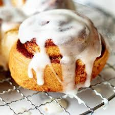

Cinamon Rolls

I stole this recipe from my boyfriend who is a baker. These are the most delicious cinamon rolls I have ever tried. They are really the fluffiest and have the perfect balance between flavors and sugar. And to top it out the icing is made with cream cheese which I am a big fan of. I love them so much I constantly ask him to make them for me and I figure I would share it with you guys!.
This recipe is made from scratch but really easy to follow and doesnt need many crazy ingredients. You may already have them all at home.
Ingredients
Dough
- 3/4 cup of milk
- 2 + 1/4 tsp yeast
- 50g suggar
- 1 egg + 1 egg yolk
- 1/4 cup melted butter
- 360 g flour
- 3/4 tsp salt
Filling
2/3 cup Dark brown sugar
- 1 + 1/2 tbs grounded cinamon
- 1/4 cup of soft butter
Icing
- 4 OZ cream cheese
- 3 tbsp soft butter
- 3/4 cup powder sugar
- 1/2 tsp vanilla extract
Steps
Dough
- Warm up the milk below 90 degrees farenheit
- In a bowl put the milk, yeast , suggar, egg, egg yolk and melted butter and mix up the ingredients
- Add the fluor and salt to the previous mix. if you have a mixer set it at medium speed for 8 minutes. If the mix is too sticky add a bit of fluor
- Once our mix is homogeneus, cover and prove the dough for 90 minutes
- Once proved, roll out the dough to 14x9 in
- Prepare the filling by mixing the butter, brown suggar and cinamon into a separate bowl
- Spread and rub in the filling ingredients on the rolled out dough
- Roll up the dough tightly and cut the roll till getting identical pieces
- Place the rolls in a baking pan and let them prove for 30-45 min
- Preheat the oven at 350
- Once the rolla have been proved a second time, bake them for 20-25 min at 350
Icing
Mix up the creamcheese, butter, powder suggar and vanilla extract into a bowl until reaching an homogeneous mixture
Finally, enjoy your delicious cinamon rolls by toping them out with the Icing.
I hope you enjoy this recipe as much as I do!